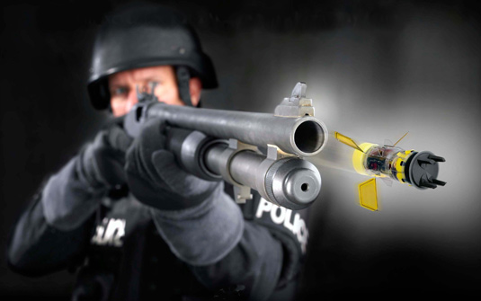
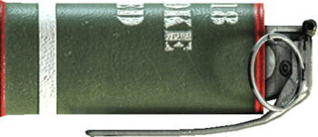
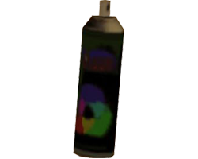
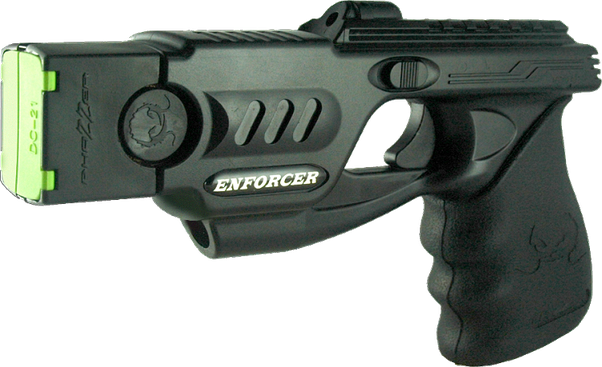
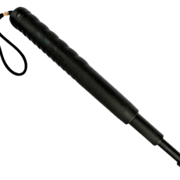

Curiosidades sobre defesa pessoal!
Quais as principais armas não letais?
Bala de borracha: É usada Para conter tumultos violentos em manifestações ou rebeliões. O que é: Como uma bala normal, ela tem uma cápsula com pólvora para impulsioná-la e uma ponta – a parte que atinge o alvo. A diferença é que a ponta não é de metal como nas balas comuns, mas de borracha. A vantagem desse material é que ele não perfura a pele. Mas a bala de borracha pode causar ferimentos graves se atingir o rosto ou até mesmo ser fatal em pontos como a garganta. Por isso os tiros só devem ser dados na direção das pernas.

Gás lacrimogêneo: É usado Para dispersar multidões e também em operações de resgate. O que é: Já chorou cortando cebola? É essa a sensação causada pelo gás lacrimogêneo. Ele parece uma granada e pode ser jogado com a mão ou com uma arma lançadora. Não confundir com as bombas de efeito moral. Estas podem ser de vários tipos: tem as que explodem fazendo só muito barulho, as que emitem luz intensa para ofuscar e as que soltam fumaça. Nada disso machuca, mas, quando estouram, as bombas soltam fragmentos que podem ferir.

Spray de pimenta: É usado Como arma de defesa pessoal ou para dispersar tumultos. É raro, mas também pode ser usado no resgate de reféns. Neste caso, é lançada uma grande quantidade do gás no ambiente em que está o seqüestrador. O que é: O gás que sai é chamado de agente OC (Oleoresina capsicum). Capsicum é um gênero de pimentas de onde é extraída a capsaicina, substância que causa forte irritação nos olhos e nas vias respiratórias. O efeito de um jato na cara pode durar até 40 minutos!

Taser: É usado: Tem função parecida com a do bastão de choque, imobilizando agressores. A grande vantagem é que o taser pode ser usado a longa distância. O que é: 1. O taser parece uma pistola comum, mas tem uma “bala” diferente. O gatilho aciona um sistema de ar comprimido e ainda regula uma descarga elétrica / 2. Impulsionado pelo ar comprimido, dois dardos são lançados em direção ao alvo. Os dardos ficam conectados à pistola por fios metálicos que podem chegar a quase 11 m / 3. Os dardos penetram 2,5 cm na pele e transmitem descargas elétricas de até 50 mil volts – igual ao bastão de choque. É possível dar descargas contínuas mantendo o gatilho apertado.

Bastão de choque: Quando é usado: Como arma de defesa pessoal ou em ações para imobilizar um fugitivo suspeito ou um agressor. O que é: Popularmente conhecido como “choquinho”, este pequeno aparelho emite descargas elétricas de até 50 mil volts, mas de baixa amperagem, o que só paralisa o agressor. Sua utilização é simples: não precisa mirar, nem nada, é só encostar o aparelho na pessoa para provocar o choque. Das armas listadas aqui é a única que não tem uso controlado no Brasil.
